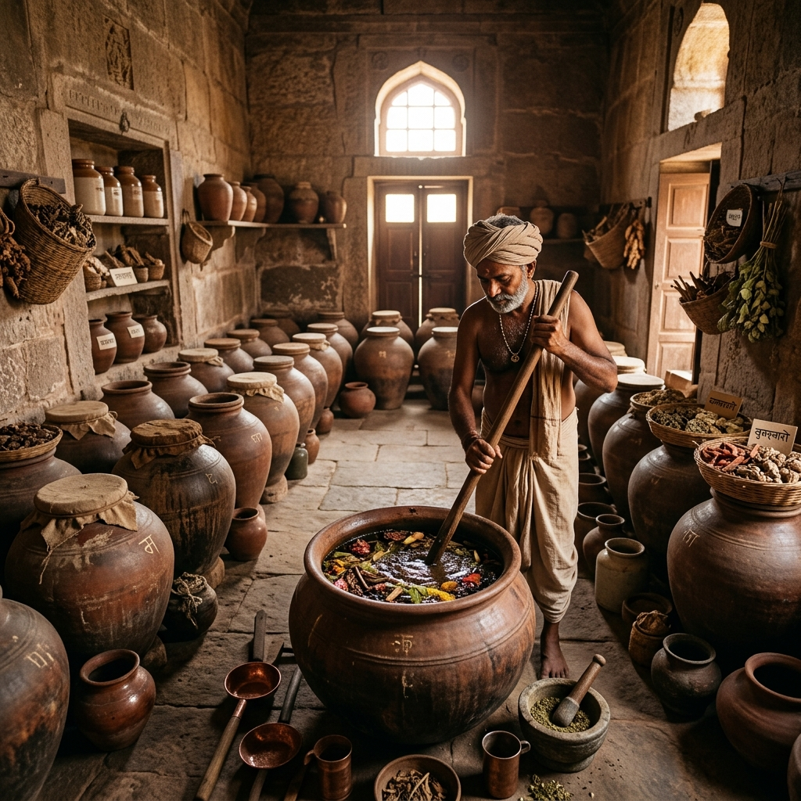

Sandhana Kalpana (Fermentation)
The harnessing of microbial life for industry and medicine is evident in the ancient Ayurvedic practice of Sandhana Kalpana (biomedical fermentation). Thousands of years ago, Indian scholars mastered controlled fermentation without understanding the exact yeast or bacterial strains involved.
These processes utilized naturally occurring microbes to ferment herbal decoctions, generating biological self-alcohol.

Asavas and Arishtas
The resulting fermented products were called Asavas and Arishtas. This was not merely about alcohol; it was a highly advanced drug delivery system.
The naturally generated alcohol acted as a preservative, allowing the medicine to be stored for years without spoiling. More importantly, it extracted both water-soluble and alcohol-soluble active botanical constituents from the herbs and enhanced their absorption into the human body.